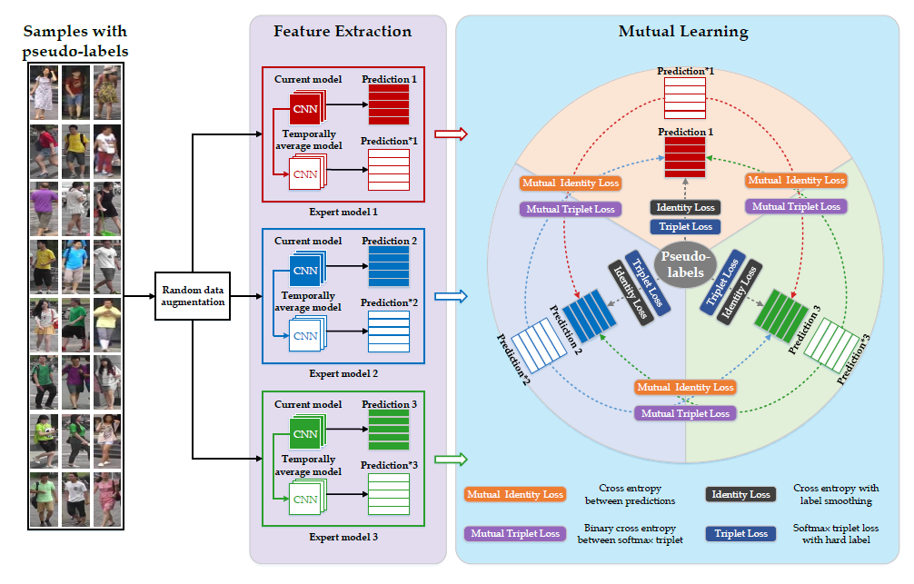
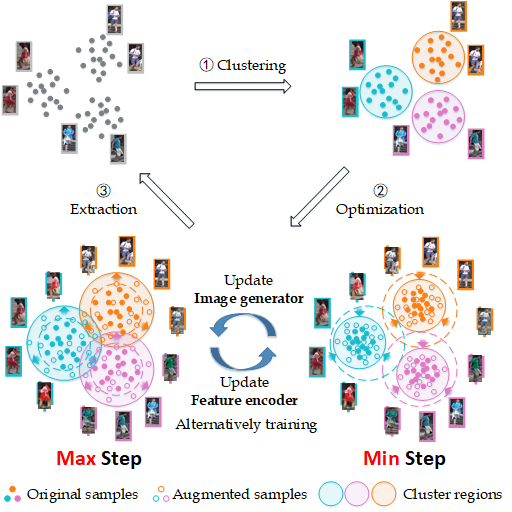
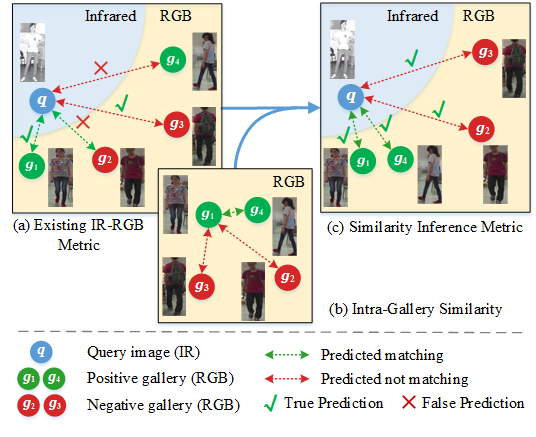

Yunpeng Zhai 翟云鹏Master StudentRoom 1213, B Building, Peng Cheng Lab
|
|
I am a CS master student at Peking University (PKU), advised by Prof. Yonghong Tian. I got a B.E. degree at Beijing University of Posts and Telecommunications in 2018.
My research interests include computer vision and machine learning, specifically for unsupervised domain adaptation, person re-identification, few-/zero-shot learning and attribute recognition.
 |
Yunpeng Zhai, Qixiang Ye, Shijian Lu, Mengxi Jia, Rongrong Ji, Yonghong Tian
Multiple Expert Brainstorming for Domain Adaptive Person Re-identification European Conference on Computer Vision (ECCV), 2020 [Code] |
 |
Yunpeng Zhai, Shijian Lu, Qixiang Ye, Xuebo Shan, Jie Chen, Rongrong Ji, Yonghong Tian
AD-Cluster: Augmented Discriminative Clustering for Domain Adaptive Person Re-identification IEEE Conference on Computer Vision and Pattern Recognition (CVPR), 2020. [PDF] |
 |
Mengxi Jia, Yunpeng Zhai, Shijian Lu, Siwei Ma, Jian Zhang
A Similarity Inference Metric for RGB-Infrared Cross-Modality Person Re-identification International Joint Conference on Artificial Intelligence (IJCAI), 2020. |